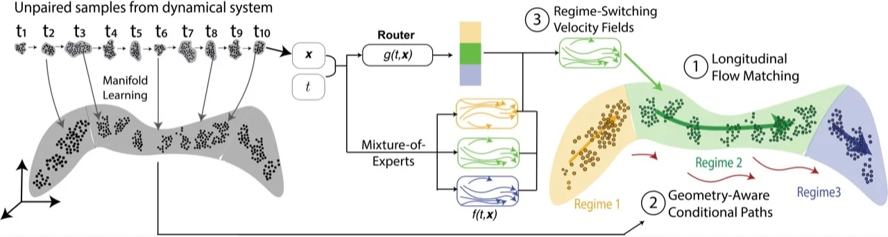
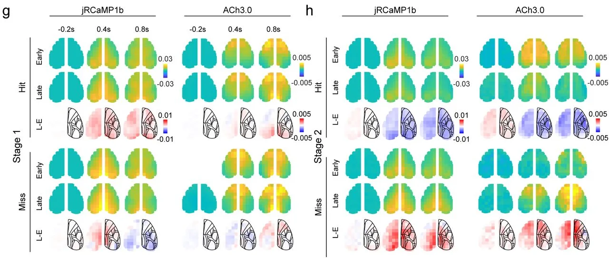
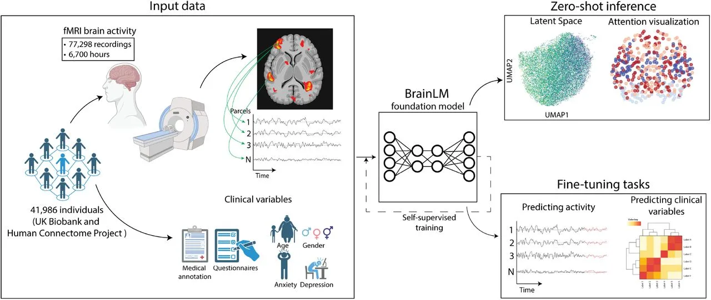
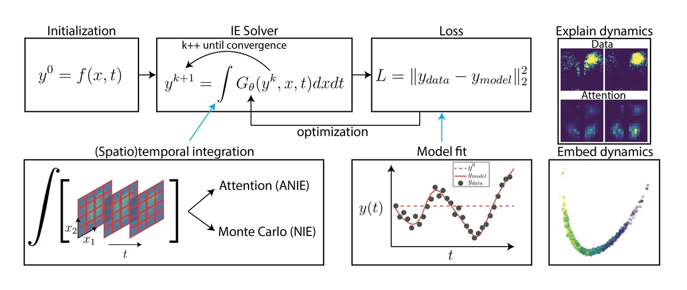
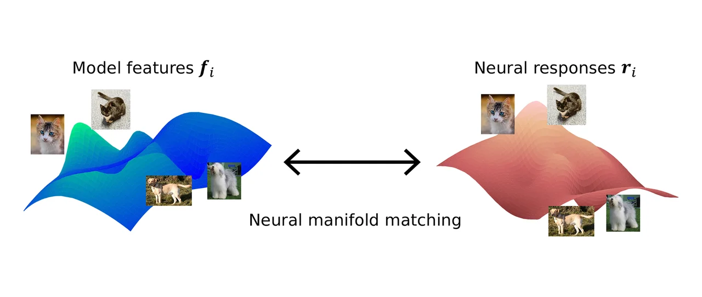

Latent dynamics of learning
How do cortical circuits reorganize as animals learn? I develop generative and state-space models that recover latent regimes and transitions from longitudinal, unpaired neural and behavioral recordings.
Swartz Postdoctoral Fellow · Department of Neuroscience, Yale University · Cardin Lab
I develop machine learning methods to understand how neural circuits give rise to perception and learning: generative models that discover latent regimes in longitudinal recordings, interpretable transformers for cortex-wide imaging, and foundation models for brain activity.
I am a Swartz Postdoctoral Fellow in the Department of Neuroscience at Yale University, working with Jess Cardin. From 2022 to 2025 I was a Wu Tsai Postdoctoral Fellow at Yale’s Wu Tsai Institute, co-mentored by Jess Cardin and David van Dijk.
I received my PhD in Quantitative and Computational Biosciences from Baylor College of Medicine, advised by Ankit Patel, and my B.Sc. in Biology from Universidad Peruana Cayetano Heredia in Lima, Peru. My work combines deep learning, dynamical systems, and neuroscience to build models that predict neural activity and are interpretable enough to generate hypotheses about how the brain computes.
I also mentor undergraduate researchers through the Research Experience for Peruvian Undergraduates (REPU) program.
Three connected threads: modeling how neural dynamics change with learning, building predictive models of brain and biological data, and understanding the inductive biases that shape perception in brains and machines.
How do cortical circuits reorganize as animals learn? I develop generative and state-space models that recover latent regimes and transitions from longitudinal, unpaired neural and behavioral recordings.
Self-supervised foundation models and operator-learning architectures that learn from large collections of recordings and transfer to new subjects, tasks, and modalities.
Which architectural choices make networks robust and brain-like? I study how locality, convolution, and recurrence shape the information that vision models rely on.
Project pages include interactive schematics of each method, results, code, and citation details.

Flow matching for unpaired longitudinal snapshots along a learned data geometry. A mixture-of-experts velocity field routes each transport step to one expert, discovering regime switches without labels in Lorenz dynamics, cortex-wide calcium imaging across learning, and embryoid-body differentiation.
Explore the project
Maps a transformer’s predictions back onto region, time, and modality and decomposes them into motifs faithful to what the model uses. In cortical calcium and acetylcholine imaging, cholinergic motifs reorganized toward frontal cortex with learning.
Explore the project
Trained on 6,700 hours of fMRI with self-supervised masked prediction. BrainLM predicts clinical variables, forecasts future brain states, and recovers functional networks zero-shot.
Explore the project
Learning unknown integral operators from data: a principled framework for modeling spatiotemporal dynamics in physical and biological systems, with an attention-based solver (ANIE).
Read the paper
Robust object-recognition models rely on low-frequency information, and localized convolutions create an implicit bias toward high-frequency adversarial examples.
Read the paperNeurIPS 2026
NeurIPS 2026
bioRxiv 2025
ICLR 2024
Nature Machine Intelligence 2024
PLOS Computational Biology 2023